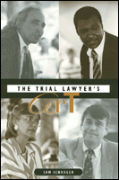

<body bgcolor="#FFFFFF" text="#000000" link="#0000FF" vlink="#CC0000" alink="#CC0000"><center><hr width="350" size="1" align="center" noshade>The truth about courtroom craft<hr width="350" size="1" align="center" noshade><p><a href="https://cdcshoppingcart.uchicago.edu/Cart/ChicagoBook.aspx?ISBN=9781566396738&&PRESS=temple" target="_top">Buy this book!</a> | <a href="https://cdcshoppingcart.uchicago.edu/Cart/Cart.aspx?PRESS=temple" target="_top">View Cart</a> | <a href="https://cdcshoppingcart.uchicago.edu/Cart/Cart.aspx?PRESS=temple" target="_top">Check Out</a></p><p></p></center><!--none//--><h1>The Trial Lawyer's Art</h1>
<h3>Sam Schrager</h3>
<P>cloth 1-56639-673-5 $68.50, <FONT COLOR=#990033>Out of Stock Unavailable</FONT>
<br>paper 1-56639-799-5 $32.95, May 00, <FONT COLOR=#990033>Available</FONT>
<BR> 264 pp
6x9
</P><h3 align="center"><P><font color="#996633">Outstanding Academic Title, <i>Choice</i>,
1999</font></P>
</H3>
<BLOCKQUOTE><I>"Professor Schrager paints an intricate portrait of litigation as a kind of art. It's a fascinating point of view that takes him deep into the complex heart, mind and soul of the trial lawyer. It could-it should-deepen the public perception of our role in the justice system. It might even change it." </I>
<BR>&#151<B>Johnnie L. Cochran, Jr.</B><I></I></BLOCKQUOTE>
<P>How do lawyers sway jurors in the heat of a trial? Why do the best trial lawyers seem uncannily able to get the verdict they want? In answering these questions, folklorist Sam Schrager vindicates&#151but with a twist&#151the widespread belief that lawyers are actors who manipulate the truth. He shows that attorneys have no choice but to treat the jury trial, from beginning to end, as an artful performance: as storytelling combat in which victory most often goes to the man or woman who has superior control of craft. </P>
<P>Drawn from fieldwork in the Philadelphia courts and at the Smithsonian Institution's American Trial Lawyers program, <I>The Trial Lawyer's Art</I> gives a remarkable, in-depth look at this craft of performance. It examines how lawyers exploit a case's dramatic potential, how they enact mythically potent themes, how they project personal authority, and how they use cultural identity&#151their own and opponents' racial, gender, class, and local affiliations&#151all to make themselves and their stories persuasive to a jury. Schrager depicts the performance styles of some of the nation's most artful criminal and civil advocates: in Philadelphia, prosecutor Roger King, defender Robert Mozenter, and the legendary Cecil B. Moore; from around the country, such litigating stars as Roy Barrera, Penny Cooper, Jo Ann Harris, Tony Serra, and Michael Tigar. These lawyers reflect candidly on their courtroom calculations and share revealing "war stories" about their work. </P>
<P>Integrating performance insights with evocative portrayals of unfolding trials, <I>The Trial Lawyer's Art</I> offers a no-holds-barred analysis of the place of skill versus evidence in the American justice system. In doing so, it raises vital questions about the moral challenges that legal and other professions now face and sheds new light on the role of stories in American life. </P>
<BR>&nbsp;<h2>Excerpt</h2><P>Excerpt available at <a href="http://www.temple.edu/tempress">www.temple.edu/tempress</a></p>
<BR>&nbsp;<h2>Reviews</h2>
<p><I>"Schrager's </I>The Trial Lawyer's Art<I> is an immensely readable and engaging account of what lawyer's do as they try to persuade jurors. It boldly and forthrightly analyzes the performance of some of the best lawyers in America. Filled with illuminating anecdotes, this book makes a good case for the view that those performances are essential to the truth-finding in the courtroom."</I>
<br>&#151<b><I>Choice</I></b>
<p><i>"Until now, the strategic and verbal art of trial advocacy has not been captured in a trade publication. That has all changed with Sam Schrager's book, </i>The Trial Lawyer's Art<i>."</i>
<br>&#151<b><i><a href="../reviews/1459_review.html">Trial</a></i></b>
<p><i>"In </i>The Trial Lawyer's Art<i>, [Schrager] effectively melds the human fascination with courtroom drama with traditional folkloric characters and plots. Thus, instead of focusing solely upon the victories of great trial lawyers, he delves deeper, seeking to pinpoint the most effective 'performance' qualities of the most persuasive advocates.</i>
<br>&#151<b><i><a href="../reviews/1459_review2.html">Georgia Bar Journal</a></i></b>
<p><i>"[A]n insightful and lucid examination of contemporary occupational folklore."</i>
<br>&#151<b><i><a href="../reviews/1459_review3.html">Journal of American Folklore</a></i></b>
<p>Read a review from <a href="http://www.bsos.umd.edu/gvpt/lpbr/subpages/reviews/schrager.html" target="new"><I>Law & Politics Book Review</I></a>, Volume 9.10 (October 1999).
<BR>&nbsp;<h2>Contents</h2><P>
<p>Acknowledgments
<br>Introduction: A Storytelling Craft
<p>1. Drama
<br><I>Two Decisive Hours &#149
Momentum &#149
Nailing Things Down</I>
<p>2. Style
<br><I>The Trial &#149
Poetics of Identification &#149
Repertoires &#149
Strains in Performance &#149
Interlude: A Legendary Lawyer</I>
<p>3. Identity
<br><I>Sources of Emotion &#149
Local Inflections &#149
Gendered Plotlines &#149
A Mix of Class, Gender, and Race</I>
<p>4. Deception and Truth
<br><I>The Client &#149
The Jury &#149
The Judge &#149
The Expert &#149
The Lawyer</I>
<p>Conclusion: In the Service of . . .
<br>Notes
<br>Bibliography
<br>Index
</P><BR>&nbsp;<H2>About the Author(s)</H2>
<table><tr><td valign="top"><img src="/tempress/authors/1459_au.gif" height="90" width="75"></td><td width="100%" valign="middle"><p><B>Sam Schrager</B> is a member of the faculty at The Evergreen State College in Olympia, Washington, where he teaches cultural and community studies. He was curator of the American Trial Lawyers program at the Smithsonian Institution's Festival of American Folklife, a main source of material for this book.</P></td></tr></table>
<BR><H2>Subject Categories</H2>
<p><A HREF="/tempress/general.html" TARGET="_top">General Interest</a>
<BR><A HREF="/tempress/law.html" TARGET="_top">Law and Criminology</a>
</p>
<p align="center"><a href="https://cdcshoppingcart.uchicago.edu/Cart/ChicagoBook.aspx?ISBN=9781566396738&&PRESS=temple" target="_top">Buy this book!</a> | <a href="https://cdcshoppingcart.uchicago.edu/Cart/Cart.aspx?PRESS=temple" target="_top">View Cart</a> | <a href="https://cdcshoppingcart.uchicago.edu/Cart/Cart.aspx?PRESS=temple" target="_top">Check Out</a></p><p><font face="Arial" size="1"><a href="copyright.html" onMouseOver="window.status='Web Copyright Policy';return true;" onMouseOut="window.status=''" title="Web Copyright Policy">&copy;</a> 2015 <a href="http://www.temple.edu" target="new" onMouseOver="window.status='Link to Temple University home page';return true;" onMouseOut="window.status=''" title="Link to Temple University home page">Temple University</a>. All Rights Reserved. http://www.temple.edu/tempress/titles/1459_reg.html</font></p>